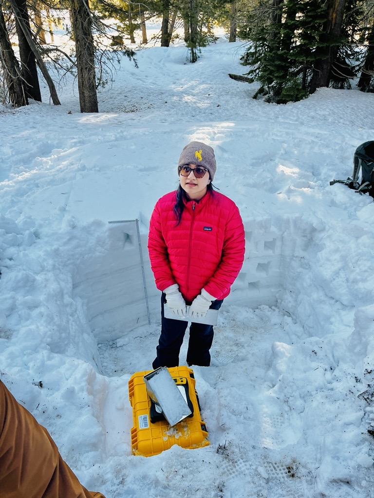

PhD Student | Civil Engineering

I’m a Ph.D. student in the Mountain Hydrology Research Group at the University of Wyoming, specializing in snow hydrology, remote sensing, and geospatial data science. My doctoral work focuses on simulating snowpack dynamics in the western U.S. using SnowModel, validated with field-based SWE observations. I also assess the feasibility of retrieving SWE using L-band InSAR across various terrains and forest conditions. I’m building an open-source interactive map in Google Earth Engine to visualize SWE retrieval feasibility, assisting researchers and water managers in identifying suitable areas for L-band InSAR use. I hold an M.S. from Auburn University, where I used X-ray CT scanning to study nutrient and water transport through soil porous media.